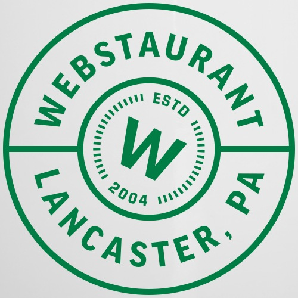
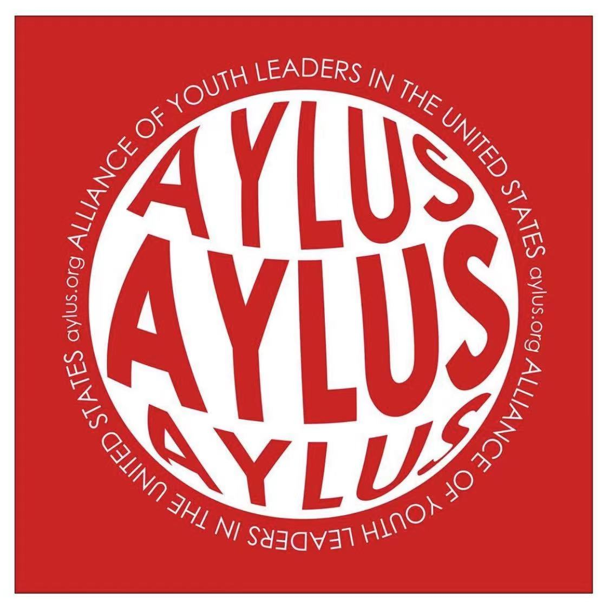

Implemented deep learning models using TensorFlow and PyTorch to predict TmS, TmiS, sML, and p53 status, resulting in a 15% increase in prediction accuracy for personalized treatment in oncology research.
Developed an application, CliPP-on-Web, for clonal structure identification through penalizing pairwise differences and used R, Shiny, and JavaScript to create an interactive tool for visualizing tumor sub-populations.
Published research findings, including the development and application of the web-based tool, in Nature Scientific Data, contributing to the advancement of immunotherapy.
May 2024 - Present

Database Developer Intern
WebstaurantStore
Engineered a process to compress a 3-terabyte database to 500 gigabytes, providing over 20 developers with optimized IDS database copies for efficient local development.
Spearheaded a team in designing and implementing a cutting-edge inventory management system using SQL and Python, resulting in a 15% increase in inventory accuracy.
Jan 2023 - Present
Fundamentals of Computer Engineering Teaching Assistant
University
Provided comprehensive coding guidance through workshops and one-on-one sessions to over 250 students, enhancing their understanding and performance in computer engineering coursework by 20%.
Conducted weekly office hours, employing Socratic questioning and problem-solving workshops, which increased project completion rates by 75% and deepened student engagement.
May 2023 - Apr 2024

Database Developer Intern
The Alliance of Youth Leaders in the United States
Launched a comprehensive database website for AYLUS using Oracle APEX, which included features such as volunteer sign-up for events and personal hour tracking, enhancing management efficiency.
Constructed database schemas by designing tables, views, triggers, functions, and stored procedures, reducing the workload of 19 board members and 200+ users by 90% and improving operational efficiency.
May 2023 - Aug 2023
Software Engineering Intern
5Point Credit Union
Engineered key features such as video calling and secure document transfer in a Virtual Banking Suite using Python, Django, and Flask, boosting customer transaction capacity by 30%.
Designed key elements such as an upload button for identification and other documents in a responsive Virtual Interface using HTML/CSS and JavaScript, increasing user engagement by 60%.